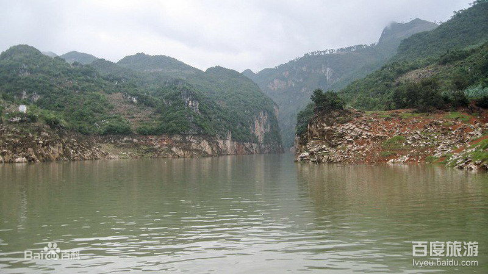
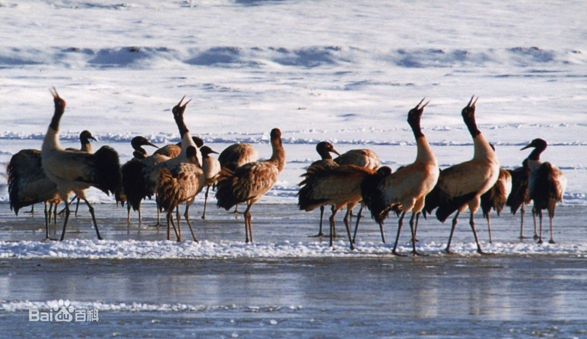

-
土地资源
2005年曲靖市行政辖区范围内土地总面积为289.04万公顷，其中农用地面积为235.08万公顷，占土地总面积的81.33%。在农用地中，耕地72.71万公顷，占土地总面积的25.16%，占农用地面积的30.93%；园地3.79万公顷，占土地总面积的1.31%，占农用地面积的1.61%；林地139.21万公顷，占土地总面积的48.16%，占农用地面积的59.22%；牧草地4.09万公顷，占土地总面积的1.41%，占农用地面积的1.74%；其他农用地15.28万公顷，占土地总面积的5.29%，占农用地面积的6.50%。建设用地10.39万公顷,占土地总面积的3.60%，其中:居民点及独立工矿用地7.86万公顷，占土地总面积的2.72%，占建设用地的75.61%；交通用地1.03万公顷，占土地总面积的0.36%，占建设用地的9.94%；水利设施用地1.50万公顷，占土地总面积的0.52%，占建设用地的14.45%。未利用地43.57万公顷，占土地总面积的15.07%。
-

水资源
曲靖全市内流域面积100平方公里以上的河流有80余条，年平均水资源总量160.2亿立方米，水能可开发量250万千瓦。 [26] 截至2016年，曲靖市有815座水库，库容量24.7亿立方米，水利工程供水量18.74亿立方米。
-
矿产资源
曲靖市已发现47种矿产资源，探明29种矿产254处矿产地。总储量354.7亿吨，按1990年不变价计算，潜在经济价值12947亿元。有较大开发利用价值的矿藏30多种，矿藏资源丰富，磷矿总储量63亿吨，占云南省的1/3，重晶石3.39亿吨，铅锌矿189万吨。此外还有铜、锑、锡、银、金、大理石、萤石、锰矿等分布，陆良还有石油天然气。曲靖市煤炭远景储量270亿吨，占全省的56%，探明储量122.61亿吨，保有资源储量116.58亿吨，占全省的40.21%，炼焦用煤储量占全省的95%以上；煤种齐全，以低灰、低硫、高发热量煤为主，煤层分布6县1市1区及3个乡（镇）、4个煤田22个矿区98个井田，大多埋藏在500米垂深以内。曲靖市已探明铅矿保有储量64.33吨，占全省10.23%；锌矿保有资源储量113.37吨，占全省6.87%，预测资源量约700万吨；锰矿保有资源储量511.3万吨，占全省5.41%；锑矿保有资源储量2986吨，占全省第五位，占1.22%；硫铁矿保有资源储量3.61亿吨，占全省第一位，占73.62%。
-

生物资源
曲靖市植物资源以亚热带植被为主，典型植被有常绿阔叶林、针叶林。植被组成复杂，常见的有松科、杉科、柏科、山茶科、壳斗科、大戟科等。由于历史原因和频繁人为活动，原生植被基本被破坏殆尽，取而代之的是天然次生植被和人工植被。曲靖市有种子植物3955种，480变种，48个亚种，53个变型，分属199科，1168属，占云南省的1/3。其中药用植物400余种，食用植物178种，工业用植物236种，花卉及观赏植物资源285种。有树蕨、野山茶、木兰、银杏、红豆杉等40种珍稀濒危保护植物，其中国家保护的31种，省级保护植物9种。主要乔木树种有云南松、华山松、油杉、杉木、黄杉、栎类等。主要经济林有梨、桃、杏、李、苹果、板栗、核桃等。常见的灌木林有火把果、耐冬果、苦刺、杨梅、马桑、小叶鸡脚黄连等数十种。主要草种有白健杆、野古草、金茅、蜈蚣草、菅草等。野生菌种类较多，主要有鸡纵、牛肝菌、干巴菌、松茸等。曲靖市动物资源有脊椎动物298种，占全省的20%，其中鸟类、小型类、鱼类较多。有大灵猫、猕猴、水獭、金猫、斑羚等30多种国家级、省级珍稀保护动物。